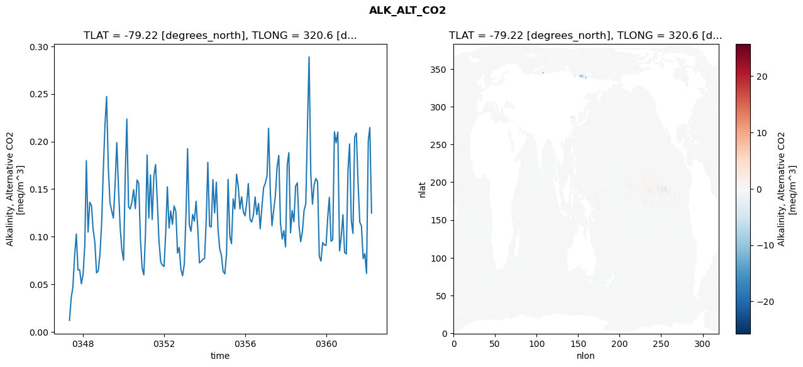
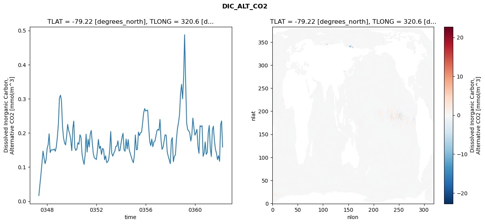
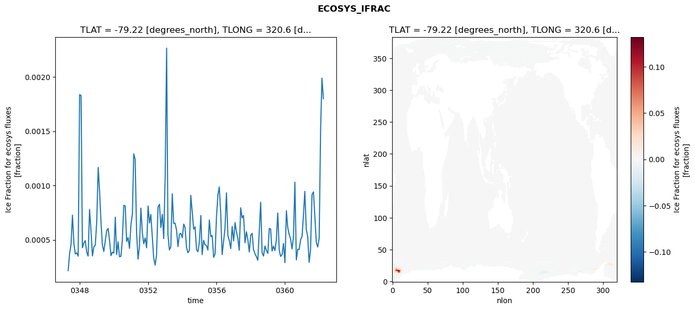
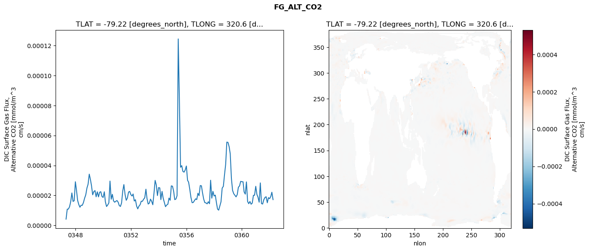

glb-dor_North_Atlantic_basin_043_1999-04-01_00173#
Simulation details#
Case: smyle.cdr-atlas-v0.glb-dor_North_Atlantic_basin_043_1999-04-01_00173.001
Basin: North_Atlantic_basin
Polygon: 43.0
Start date: 1999-04
Show code cell source Hide code cell source
import xarray as xr
import matplotlib.pyplot as plt
Show code cell source Hide code cell source
zarr_store = "/path/to/zarr/store"
# Parameters
zarr_store = "/global/cfs/projectdirs/m4746/Projects/Ocean-CDR-Atlas-v0/data/validation/smyle.cdr-atlas-v0.glb-dor_North_Atlantic_basin_043_1999-04-01_00173.001.validation.zarr"
Show code cell source Hide code cell source
%%time
ds_o = xr.open_zarr(zarr_store).compute()
ds_o
CPU times: user 632 ms, sys: 463 ms, total: 1.1 s
Wall time: 1.34 s
<xarray.Dataset> Size: 2MB
Dimensions: (nlat: 384, nlon: 320, time: 180)
Coordinates:
TLAT float64 8B -79.22
TLONG float64 8B 320.6
ULAT float64 8B -78.95
ULONG float64 8B 321.1
* time (time) object 1kB 0347-05-01 00:00:00 ... 0362-04-01 0...
z_t float32 4B 500.0
Dimensions without coordinates: nlat, nlon
Data variables:
ALK_ALT_CO2_diff (nlat, nlon) float32 492kB nan nan nan ... nan nan nan
ALK_ALT_CO2_rmse (time) float64 1kB 0.01201 0.03552 ... 0.2147 0.1248
DIC_ALT_CO2_diff (nlat, nlon) float32 492kB nan nan nan ... nan nan nan
DIC_ALT_CO2_rmse (time) float64 1kB 0.01661 0.04898 ... 0.2352 0.1586
ECOSYS_IFRAC_diff (nlat, nlon) float32 492kB nan nan nan ... nan nan nan
ECOSYS_IFRAC_rmse (time) float64 1kB 0.0002169 0.0003752 ... 0.001799
FG_ALT_CO2_diff (nlat, nlon) float32 492kB nan nan nan ... nan nan nan
FG_ALT_CO2_rmse (time) float64 1kB 4.196e-06 1.084e-05 ... 1.719e-05xarray.Dataset
- nlat: 384
- nlon: 320
- time: 180
- TLAT()float64-79.22
- long_name :
- array of t-grid latitudes
- units :
- degrees_north
array(-79.22052261)
- TLONG()float64320.6
- long_name :
- array of t-grid longitudes
- units :
- degrees_east
array(320.56250892)
- ULAT()float64-78.95
- long_name :
- array of u-grid latitudes
- units :
- degrees_north
array(-78.95289509)
- ULONG()float64321.1
- long_name :
- array of u-grid longitudes
- units :
- degrees_east
array(321.12500894)
- time(time)object0347-05-01 00:00:00 ... 0362-04-...
- bounds :
- time_bound
- long_name :
- time
array([cftime.DatetimeNoLeap(347, 5, 1, 0, 0, 0, 0, has_year_zero=True), cftime.DatetimeNoLeap(347, 6, 1, 0, 0, 0, 0, has_year_zero=True), cftime.DatetimeNoLeap(347, 7, 1, 0, 0, 0, 0, has_year_zero=True), cftime.DatetimeNoLeap(347, 8, 1, 0, 0, 0, 0, has_year_zero=True), cftime.DatetimeNoLeap(347, 9, 1, 0, 0, 0, 0, has_year_zero=True), cftime.DatetimeNoLeap(347, 10, 1, 0, 0, 0, 0, has_year_zero=True), cftime.DatetimeNoLeap(347, 11, 1, 0, 0, 0, 0, has_year_zero=True), cftime.DatetimeNoLeap(347, 12, 1, 0, 0, 0, 0, has_year_zero=True), cftime.DatetimeNoLeap(348, 1, 1, 0, 0, 0, 0, has_year_zero=True), cftime.DatetimeNoLeap(348, 2, 1, 0, 0, 0, 0, has_year_zero=True), cftime.DatetimeNoLeap(348, 3, 1, 0, 0, 0, 0, has_year_zero=True), cftime.DatetimeNoLeap(348, 4, 1, 0, 0, 0, 0, has_year_zero=True), cftime.DatetimeNoLeap(348, 5, 1, 0, 0, 0, 0, has_year_zero=True), cftime.DatetimeNoLeap(348, 6, 1, 0, 0, 0, 0, has_year_zero=True), cftime.DatetimeNoLeap(348, 7, 1, 0, 0, 0, 0, has_year_zero=True), cftime.DatetimeNoLeap(348, 8, 1, 0, 0, 0, 0, has_year_zero=True), cftime.DatetimeNoLeap(348, 9, 1, 0, 0, 0, 0, has_year_zero=True), cftime.DatetimeNoLeap(348, 10, 1, 0, 0, 0, 0, has_year_zero=True), cftime.DatetimeNoLeap(348, 11, 1, 0, 0, 0, 0, has_year_zero=True), cftime.DatetimeNoLeap(348, 12, 1, 0, 0, 0, 0, has_year_zero=True), cftime.DatetimeNoLeap(349, 1, 1, 0, 0, 0, 0, has_year_zero=True), cftime.DatetimeNoLeap(349, 2, 1, 0, 0, 0, 0, has_year_zero=True), cftime.DatetimeNoLeap(349, 3, 1, 0, 0, 0, 0, has_year_zero=True), cftime.DatetimeNoLeap(349, 4, 1, 0, 0, 0, 0, has_year_zero=True), cftime.DatetimeNoLeap(349, 5, 1, 0, 0, 0, 0, has_year_zero=True), cftime.DatetimeNoLeap(349, 6, 1, 0, 0, 0, 0, has_year_zero=True), cftime.DatetimeNoLeap(349, 7, 1, 0, 0, 0, 0, has_year_zero=True), cftime.DatetimeNoLeap(349, 8, 1, 0, 0, 0, 0, has_year_zero=True), cftime.DatetimeNoLeap(349, 9, 1, 0, 0, 0, 0, has_year_zero=True), cftime.DatetimeNoLeap(349, 10, 1, 0, 0, 0, 0, has_year_zero=True), cftime.DatetimeNoLeap(349, 11, 1, 0, 0, 0, 0, has_year_zero=True), cftime.DatetimeNoLeap(349, 12, 1, 0, 0, 0, 0, has_year_zero=True), cftime.DatetimeNoLeap(350, 1, 1, 0, 0, 0, 0, has_year_zero=True), cftime.DatetimeNoLeap(350, 2, 1, 0, 0, 0, 0, has_year_zero=True), cftime.DatetimeNoLeap(350, 3, 1, 0, 0, 0, 0, has_year_zero=True), cftime.DatetimeNoLeap(350, 4, 1, 0, 0, 0, 0, has_year_zero=True), cftime.DatetimeNoLeap(350, 5, 1, 0, 0, 0, 0, has_year_zero=True), cftime.DatetimeNoLeap(350, 6, 1, 0, 0, 0, 0, has_year_zero=True), cftime.DatetimeNoLeap(350, 7, 1, 0, 0, 0, 0, has_year_zero=True), cftime.DatetimeNoLeap(350, 8, 1, 0, 0, 0, 0, has_year_zero=True), cftime.DatetimeNoLeap(350, 9, 1, 0, 0, 0, 0, has_year_zero=True), cftime.DatetimeNoLeap(350, 10, 1, 0, 0, 0, 0, has_year_zero=True), cftime.DatetimeNoLeap(350, 11, 1, 0, 0, 0, 0, has_year_zero=True), cftime.DatetimeNoLeap(350, 12, 1, 0, 0, 0, 0, has_year_zero=True), cftime.DatetimeNoLeap(351, 1, 1, 0, 0, 0, 0, has_year_zero=True), cftime.DatetimeNoLeap(351, 2, 1, 0, 0, 0, 0, has_year_zero=True), cftime.DatetimeNoLeap(351, 3, 1, 0, 0, 0, 0, has_year_zero=True), cftime.DatetimeNoLeap(351, 4, 1, 0, 0, 0, 0, has_year_zero=True), cftime.DatetimeNoLeap(351, 5, 1, 0, 0, 0, 0, has_year_zero=True), cftime.DatetimeNoLeap(351, 6, 1, 0, 0, 0, 0, has_year_zero=True), cftime.DatetimeNoLeap(351, 7, 1, 0, 0, 0, 0, has_year_zero=True), cftime.DatetimeNoLeap(351, 8, 1, 0, 0, 0, 0, has_year_zero=True), cftime.DatetimeNoLeap(351, 9, 1, 0, 0, 0, 0, has_year_zero=True), cftime.DatetimeNoLeap(351, 10, 1, 0, 0, 0, 0, has_year_zero=True), cftime.DatetimeNoLeap(351, 11, 1, 0, 0, 0, 0, has_year_zero=True), cftime.DatetimeNoLeap(351, 12, 1, 0, 0, 0, 0, has_year_zero=True), cftime.DatetimeNoLeap(352, 1, 1, 0, 0, 0, 0, has_year_zero=True), cftime.DatetimeNoLeap(352, 2, 1, 0, 0, 0, 0, has_year_zero=True), cftime.DatetimeNoLeap(352, 3, 1, 0, 0, 0, 0, has_year_zero=True), cftime.DatetimeNoLeap(352, 4, 1, 0, 0, 0, 0, has_year_zero=True), cftime.DatetimeNoLeap(352, 5, 1, 0, 0, 0, 0, has_year_zero=True), cftime.DatetimeNoLeap(352, 6, 1, 0, 0, 0, 0, has_year_zero=True), cftime.DatetimeNoLeap(352, 7, 1, 0, 0, 0, 0, has_year_zero=True), cftime.DatetimeNoLeap(352, 8, 1, 0, 0, 0, 0, has_year_zero=True), cftime.DatetimeNoLeap(352, 9, 1, 0, 0, 0, 0, has_year_zero=True), cftime.DatetimeNoLeap(352, 10, 1, 0, 0, 0, 0, has_year_zero=True), cftime.DatetimeNoLeap(352, 11, 1, 0, 0, 0, 0, has_year_zero=True), cftime.DatetimeNoLeap(352, 12, 1, 0, 0, 0, 0, has_year_zero=True), cftime.DatetimeNoLeap(353, 1, 1, 0, 0, 0, 0, has_year_zero=True), cftime.DatetimeNoLeap(353, 2, 1, 0, 0, 0, 0, has_year_zero=True), cftime.DatetimeNoLeap(353, 3, 1, 0, 0, 0, 0, has_year_zero=True), cftime.DatetimeNoLeap(353, 4, 1, 0, 0, 0, 0, has_year_zero=True), cftime.DatetimeNoLeap(353, 5, 1, 0, 0, 0, 0, has_year_zero=True), cftime.DatetimeNoLeap(353, 6, 1, 0, 0, 0, 0, has_year_zero=True), cftime.DatetimeNoLeap(353, 7, 1, 0, 0, 0, 0, has_year_zero=True), cftime.DatetimeNoLeap(353, 8, 1, 0, 0, 0, 0, has_year_zero=True), cftime.DatetimeNoLeap(353, 9, 1, 0, 0, 0, 0, has_year_zero=True), cftime.DatetimeNoLeap(353, 10, 1, 0, 0, 0, 0, has_year_zero=True), cftime.DatetimeNoLeap(353, 11, 1, 0, 0, 0, 0, has_year_zero=True), cftime.DatetimeNoLeap(353, 12, 1, 0, 0, 0, 0, has_year_zero=True), cftime.DatetimeNoLeap(354, 1, 1, 0, 0, 0, 0, has_year_zero=True), cftime.DatetimeNoLeap(354, 2, 1, 0, 0, 0, 0, has_year_zero=True), cftime.DatetimeNoLeap(354, 3, 1, 0, 0, 0, 0, has_year_zero=True), cftime.DatetimeNoLeap(354, 4, 1, 0, 0, 0, 0, has_year_zero=True), cftime.DatetimeNoLeap(354, 5, 1, 0, 0, 0, 0, has_year_zero=True), cftime.DatetimeNoLeap(354, 6, 1, 0, 0, 0, 0, has_year_zero=True), cftime.DatetimeNoLeap(354, 7, 1, 0, 0, 0, 0, has_year_zero=True), cftime.DatetimeNoLeap(354, 8, 1, 0, 0, 0, 0, has_year_zero=True), cftime.DatetimeNoLeap(354, 9, 1, 0, 0, 0, 0, has_year_zero=True), cftime.DatetimeNoLeap(354, 10, 1, 0, 0, 0, 0, has_year_zero=True), cftime.DatetimeNoLeap(354, 11, 1, 0, 0, 0, 0, has_year_zero=True), cftime.DatetimeNoLeap(354, 12, 1, 0, 0, 0, 0, has_year_zero=True), cftime.DatetimeNoLeap(355, 1, 1, 0, 0, 0, 0, has_year_zero=True), cftime.DatetimeNoLeap(355, 2, 1, 0, 0, 0, 0, has_year_zero=True), cftime.DatetimeNoLeap(355, 3, 1, 0, 0, 0, 0, has_year_zero=True), cftime.DatetimeNoLeap(355, 4, 1, 0, 0, 0, 0, has_year_zero=True), cftime.DatetimeNoLeap(355, 5, 1, 0, 0, 0, 0, has_year_zero=True), cftime.DatetimeNoLeap(355, 6, 1, 0, 0, 0, 0, has_year_zero=True), cftime.DatetimeNoLeap(355, 7, 1, 0, 0, 0, 0, has_year_zero=True), cftime.DatetimeNoLeap(355, 8, 1, 0, 0, 0, 0, has_year_zero=True), cftime.DatetimeNoLeap(355, 9, 1, 0, 0, 0, 0, has_year_zero=True), cftime.DatetimeNoLeap(355, 10, 1, 0, 0, 0, 0, has_year_zero=True), cftime.DatetimeNoLeap(355, 11, 1, 0, 0, 0, 0, has_year_zero=True), cftime.DatetimeNoLeap(355, 12, 1, 0, 0, 0, 0, has_year_zero=True), cftime.DatetimeNoLeap(356, 1, 1, 0, 0, 0, 0, has_year_zero=True), cftime.DatetimeNoLeap(356, 2, 1, 0, 0, 0, 0, has_year_zero=True), cftime.DatetimeNoLeap(356, 3, 1, 0, 0, 0, 0, has_year_zero=True), cftime.DatetimeNoLeap(356, 4, 1, 0, 0, 0, 0, has_year_zero=True), cftime.DatetimeNoLeap(356, 5, 1, 0, 0, 0, 0, has_year_zero=True), cftime.DatetimeNoLeap(356, 6, 1, 0, 0, 0, 0, has_year_zero=True), cftime.DatetimeNoLeap(356, 7, 1, 0, 0, 0, 0, has_year_zero=True), cftime.DatetimeNoLeap(356, 8, 1, 0, 0, 0, 0, has_year_zero=True), cftime.DatetimeNoLeap(356, 9, 1, 0, 0, 0, 0, has_year_zero=True), cftime.DatetimeNoLeap(356, 10, 1, 0, 0, 0, 0, has_year_zero=True), cftime.DatetimeNoLeap(356, 11, 1, 0, 0, 0, 0, has_year_zero=True), cftime.DatetimeNoLeap(356, 12, 1, 0, 0, 0, 0, has_year_zero=True), cftime.DatetimeNoLeap(357, 1, 1, 0, 0, 0, 0, has_year_zero=True), cftime.DatetimeNoLeap(357, 2, 1, 0, 0, 0, 0, has_year_zero=True), cftime.DatetimeNoLeap(357, 3, 1, 0, 0, 0, 0, has_year_zero=True), cftime.DatetimeNoLeap(357, 4, 1, 0, 0, 0, 0, has_year_zero=True), cftime.DatetimeNoLeap(357, 5, 1, 0, 0, 0, 0, has_year_zero=True), cftime.DatetimeNoLeap(357, 6, 1, 0, 0, 0, 0, has_year_zero=True), cftime.DatetimeNoLeap(357, 7, 1, 0, 0, 0, 0, has_year_zero=True), cftime.DatetimeNoLeap(357, 8, 1, 0, 0, 0, 0, has_year_zero=True), cftime.DatetimeNoLeap(357, 9, 1, 0, 0, 0, 0, has_year_zero=True), cftime.DatetimeNoLeap(357, 10, 1, 0, 0, 0, 0, has_year_zero=True), cftime.DatetimeNoLeap(357, 11, 1, 0, 0, 0, 0, has_year_zero=True), cftime.DatetimeNoLeap(357, 12, 1, 0, 0, 0, 0, has_year_zero=True), cftime.DatetimeNoLeap(358, 1, 1, 0, 0, 0, 0, has_year_zero=True), cftime.DatetimeNoLeap(358, 2, 1, 0, 0, 0, 0, has_year_zero=True), cftime.DatetimeNoLeap(358, 3, 1, 0, 0, 0, 0, has_year_zero=True), cftime.DatetimeNoLeap(358, 4, 1, 0, 0, 0, 0, has_year_zero=True), cftime.DatetimeNoLeap(358, 5, 1, 0, 0, 0, 0, has_year_zero=True), cftime.DatetimeNoLeap(358, 6, 1, 0, 0, 0, 0, has_year_zero=True), cftime.DatetimeNoLeap(358, 7, 1, 0, 0, 0, 0, has_year_zero=True), cftime.DatetimeNoLeap(358, 8, 1, 0, 0, 0, 0, has_year_zero=True), cftime.DatetimeNoLeap(358, 9, 1, 0, 0, 0, 0, has_year_zero=True), cftime.DatetimeNoLeap(358, 10, 1, 0, 0, 0, 0, has_year_zero=True), cftime.DatetimeNoLeap(358, 11, 1, 0, 0, 0, 0, has_year_zero=True), cftime.DatetimeNoLeap(358, 12, 1, 0, 0, 0, 0, has_year_zero=True), cftime.DatetimeNoLeap(359, 1, 1, 0, 0, 0, 0, has_year_zero=True), cftime.DatetimeNoLeap(359, 2, 1, 0, 0, 0, 0, has_year_zero=True), cftime.DatetimeNoLeap(359, 3, 1, 0, 0, 0, 0, has_year_zero=True), cftime.DatetimeNoLeap(359, 4, 1, 0, 0, 0, 0, has_year_zero=True), cftime.DatetimeNoLeap(359, 5, 1, 0, 0, 0, 0, has_year_zero=True), cftime.DatetimeNoLeap(359, 6, 1, 0, 0, 0, 0, has_year_zero=True), cftime.DatetimeNoLeap(359, 7, 1, 0, 0, 0, 0, has_year_zero=True), cftime.DatetimeNoLeap(359, 8, 1, 0, 0, 0, 0, has_year_zero=True), cftime.DatetimeNoLeap(359, 9, 1, 0, 0, 0, 0, has_year_zero=True), cftime.DatetimeNoLeap(359, 10, 1, 0, 0, 0, 0, has_year_zero=True), cftime.DatetimeNoLeap(359, 11, 1, 0, 0, 0, 0, has_year_zero=True), cftime.DatetimeNoLeap(359, 12, 1, 0, 0, 0, 0, has_year_zero=True), cftime.DatetimeNoLeap(360, 1, 1, 0, 0, 0, 0, has_year_zero=True), cftime.DatetimeNoLeap(360, 2, 1, 0, 0, 0, 0, has_year_zero=True), cftime.DatetimeNoLeap(360, 3, 1, 0, 0, 0, 0, has_year_zero=True), cftime.DatetimeNoLeap(360, 4, 1, 0, 0, 0, 0, has_year_zero=True), cftime.DatetimeNoLeap(360, 5, 1, 0, 0, 0, 0, has_year_zero=True), cftime.DatetimeNoLeap(360, 6, 1, 0, 0, 0, 0, has_year_zero=True), cftime.DatetimeNoLeap(360, 7, 1, 0, 0, 0, 0, has_year_zero=True), cftime.DatetimeNoLeap(360, 8, 1, 0, 0, 0, 0, has_year_zero=True), cftime.DatetimeNoLeap(360, 9, 1, 0, 0, 0, 0, has_year_zero=True), cftime.DatetimeNoLeap(360, 10, 1, 0, 0, 0, 0, has_year_zero=True), cftime.DatetimeNoLeap(360, 11, 1, 0, 0, 0, 0, has_year_zero=True), cftime.DatetimeNoLeap(360, 12, 1, 0, 0, 0, 0, has_year_zero=True), cftime.DatetimeNoLeap(361, 1, 1, 0, 0, 0, 0, has_year_zero=True), cftime.DatetimeNoLeap(361, 2, 1, 0, 0, 0, 0, has_year_zero=True), cftime.DatetimeNoLeap(361, 3, 1, 0, 0, 0, 0, has_year_zero=True), cftime.DatetimeNoLeap(361, 4, 1, 0, 0, 0, 0, has_year_zero=True), cftime.DatetimeNoLeap(361, 5, 1, 0, 0, 0, 0, has_year_zero=True), cftime.DatetimeNoLeap(361, 6, 1, 0, 0, 0, 0, has_year_zero=True), cftime.DatetimeNoLeap(361, 7, 1, 0, 0, 0, 0, has_year_zero=True), cftime.DatetimeNoLeap(361, 8, 1, 0, 0, 0, 0, has_year_zero=True), cftime.DatetimeNoLeap(361, 9, 1, 0, 0, 0, 0, has_year_zero=True), cftime.DatetimeNoLeap(361, 10, 1, 0, 0, 0, 0, has_year_zero=True), cftime.DatetimeNoLeap(361, 11, 1, 0, 0, 0, 0, has_year_zero=True), cftime.DatetimeNoLeap(361, 12, 1, 0, 0, 0, 0, has_year_zero=True), cftime.DatetimeNoLeap(362, 1, 1, 0, 0, 0, 0, has_year_zero=True), cftime.DatetimeNoLeap(362, 2, 1, 0, 0, 0, 0, has_year_zero=True), cftime.DatetimeNoLeap(362, 3, 1, 0, 0, 0, 0, has_year_zero=True), cftime.DatetimeNoLeap(362, 4, 1, 0, 0, 0, 0, has_year_zero=True)], dtype=object) - z_t()float32500.0
- long_name :
- depth from surface to midpoint of layer
- positive :
- down
- units :
- centimeters
- valid_max :
- 537500.0
- valid_min :
- 500.0
array(500., dtype=float32)
- ALK_ALT_CO2_diff(nlat, nlon)float32nan nan nan nan ... nan nan nan nan
- cell_methods :
- time: mean
- grid_loc :
- 3111
- long_name :
- Alkalinity, Alternative CO2
- units :
- meq/m^3
array([[ nan, nan, nan, ..., nan, nan, nan], [ nan, nan, nan, ..., nan, nan, nan], [0.0065918 , 0.00317383, 0.00195312, ..., nan, nan, nan], ..., [ nan, nan, nan, ..., nan, nan, nan], [ nan, nan, nan, ..., nan, nan, nan], [ nan, nan, nan, ..., nan, nan, nan]], dtype=float32) - ALK_ALT_CO2_rmse(time)float640.01201 0.03552 ... 0.2147 0.1248
- cell_methods :
- time: mean
- grid_loc :
- 3111
- long_name :
- Alkalinity, Alternative CO2
- units :
- meq/m^3
array([0.01200954, 0.0355196 , 0.04686633, 0.07923353, 0.10273408, 0.06517556, 0.06517078, 0.05053659, 0.06014134, 0.09121681, 0.17979465, 0.10481806, 0.13608699, 0.13289057, 0.10773362, 0.09442235, 0.06193248, 0.06406199, 0.08108627, 0.11325213, 0.17069816, 0.21882843, 0.24725009, 0.1730056 , 0.13558319, 0.12706485, 0.11954712, 0.15467862, 0.1988439 , 0.15151492, 0.10927685, 0.08626031, 0.07527106, 0.16574004, 0.2235757 , 0.13129592, 0.12915412, 0.13646422, 0.14945341, 0.12951821, 0.15958637, 0.15617166, 0.09755657, 0.06725286, 0.05993236, 0.1048202 , 0.18583675, 0.11948731, 0.16481918, 0.11812325, 0.16370109, 0.17581294, 0.13726332, 0.09561538, 0.07354416, 0.07002581, 0.06880974, 0.10539074, 0.15231387, 0.10909963, 0.12706575, 0.11297653, 0.13231461, 0.12672788, 0.08283983, 0.08870161, 0.06553748, 0.05886782, 0.07141848, 0.12477293, 0.19250108, 0.11254701, 0.10559717, 0.1233664 , 0.1163185 , 0.13719386, 0.10805087, 0.07251065, 0.07405987, 0.07607778, 0.07705254, 0.11939671, 0.17807947, 0.11113736, 0.11004645, 0.15992099, 0.12489028, 0.15721305, 0.10751544, 0.08736838, 0.08020868, 0.06368597, 0.06089389, 0.08184452, 0.16020525, 0.10031141, 0.09272661, 0.13964709, 0.12901603, 0.16561156, 0.152554 , 0.12922073, 0.14189179, 0.12606363, 0.12191063, 0.13646044, 0.15582983, 0.117779 , 0.11536607, 0.12291457, 0.14172009, 0.12314334, 0.13491053, 0.10840669, 0.13152547, 0.15150358, 0.15603311, 0.16382973, 0.2138898 , 0.14751654, 0.11147386, 0.12764256, 0.14311417, 0.17305187, 0.18535159, 0.11434286, 0.09757545, 0.10639374, 0.08921979, 0.17607756, 0.18822588, 0.10410131, 0.12738049, 0.1158213 , 0.15300547, 0.15652309, 0.11137442, 0.0947624 , 0.10548566, 0.12780379, 0.13457238, 0.21946878, 0.28887607, 0.16560224, 0.13419462, 0.15474302, 0.16109392, 0.15782789, 0.07928823, 0.07434338, 0.09384063, 0.09126392, 0.09082571, 0.12093694, 0.14125533, 0.09523206, 0.09674744, 0.21020779, 0.19865121, 0.20985593, 0.08503396, 0.09948568, 0.12305358, 0.08338973, 0.08183382, 0.17045647, 0.19737827, 0.11665069, 0.10346375, 0.20467278, 0.20897421, 0.15628247, 0.11534276, 0.11112228, 0.07695203, 0.0822064 , 0.06140671, 0.2008809 , 0.21466755, 0.12475383]) - DIC_ALT_CO2_diff(nlat, nlon)float32nan nan nan nan ... nan nan nan nan
- cell_methods :
- time: mean
- grid_loc :
- 3111
- long_name :
- Dissolved Inorganic Carbon, Alternative CO2
- units :
- mmol/m^3
array([[ nan, nan, nan, ..., nan, nan, nan], [ nan, nan, nan, ..., nan, nan, nan], [-0.01757812, -0.015625 , -0.01513672, ..., nan, nan, nan], ..., [ nan, nan, nan, ..., nan, nan, nan], [ nan, nan, nan, ..., nan, nan, nan], [ nan, nan, nan, ..., nan, nan, nan]], dtype=float32) - DIC_ALT_CO2_rmse(time)float640.01661 0.04898 ... 0.2352 0.1586
- cell_methods :
- time: mean
- grid_loc :
- 3111
- long_name :
- Dissolved Inorganic Carbon, Alternative CO2
- units :
- mmol/m^3
array([0.016605 , 0.04898197, 0.07764133, 0.11171416, 0.14678461, 0.12698029, 0.10996622, 0.12163614, 0.15416281, 0.16633339, 0.19743768, 0.14252133, 0.15010382, 0.15064828, 0.14987167, 0.15305219, 0.14639086, 0.15983901, 0.18907212, 0.22666646, 0.3026776 , 0.31049018, 0.29472117, 0.21990141, 0.18628703, 0.1708823 , 0.16485291, 0.18979712, 0.22501918, 0.20739874, 0.19727128, 0.18110133, 0.14806557, 0.21348381, 0.23475467, 0.15736672, 0.14870288, 0.1527978 , 0.17131355, 0.16672233, 0.1947185 , 0.18739574, 0.1388886 , 0.12067219, 0.10788527, 0.13490065, 0.19636393, 0.14391785, 0.18173141, 0.15885284, 0.19579224, 0.20725321, 0.17139737, 0.13928658, 0.12691463, 0.1247841 , 0.12217793, 0.14938239, 0.18088867, 0.15451155, 0.161174 , 0.13685451, 0.15455034, 0.15196589, 0.12144249, 0.13312175, 0.11299905, 0.11533233, 0.12215772, 0.15119465, 0.20414988, 0.14064425, 0.13205922, 0.14060561, 0.14665535, 0.16101388, 0.16125556, 0.17705615, 0.14712991, 0.14872687, 0.1698565 , 0.18797381, 0.19896261, 0.15016204, 0.14617587, 0.18223598, 0.15285739, 0.18070007, 0.15029899, 0.14022911, 0.12950076, 0.11975941, 0.11260233, 0.13517579, 0.19410064, 0.15051979, 0.15200612, 0.20230588, 0.19232734, 0.20064701, 0.20216146, 0.2273633 , 0.25801644, 0.27115092, 0.26386986, 0.26637113, 0.26671056, 0.21648189, 0.17525388, 0.16250256, 0.18199918, 0.15956442, 0.17353488, 0.17504717, 0.19110701, 0.20670756, 0.21061435, 0.2073974 , 0.2395352 , 0.17965277, 0.15198842, 0.15787215, 0.176488 , 0.19479603, 0.19315576, 0.14479024, 0.13159048, 0.12149244, 0.10993078, 0.17781996, 0.18636917, 0.11563069, 0.13164764, 0.13508567, 0.18012519, 0.21294311, 0.22993562, 0.25309882, 0.31537278, 0.34220165, 0.2998567 , 0.36437816, 0.48746571, 0.34819515, 0.22859306, 0.20905122, 0.20682137, 0.19875468, 0.17599616, 0.19467291, 0.24352208, 0.21521037, 0.19331298, 0.20118354, 0.21059206, 0.16043489, 0.14000736, 0.2211053 , 0.21854967, 0.22100372, 0.13146441, 0.14142122, 0.17352452, 0.13720168, 0.14299756, 0.20174838, 0.22184258, 0.15492605, 0.13087909, 0.20832996, 0.21976544, 0.1781823 , 0.1517452 , 0.14063462, 0.12196587, 0.13335786, 0.11698169, 0.22345572, 0.23518671, 0.15864155]) - ECOSYS_IFRAC_diff(nlat, nlon)float32nan nan nan nan ... nan nan nan nan
- cell_methods :
- time: mean
- grid_loc :
- 2110
- long_name :
- Ice Fraction for ecosys fluxes
- units :
- fraction
array([[ nan, nan, nan, ..., nan, nan, nan], [ nan, nan, nan, ..., nan, nan, nan], [ 0.00061315, -0.00152659, -0.00160116, ..., nan, nan, nan], ..., [ nan, nan, nan, ..., nan, nan, nan], [ nan, nan, nan, ..., nan, nan, nan], [ nan, nan, nan, ..., nan, nan, nan]], dtype=float32) - ECOSYS_IFRAC_rmse(time)float640.0002169 0.0003752 ... 0.001799
- cell_methods :
- time: mean
- grid_loc :
- 2110
- long_name :
- Ice Fraction for ecosys fluxes
- units :
- fraction
array([0.00021685, 0.00037524, 0.00045337, 0.00072721, 0.00046568, 0.00036998, 0.00038074, 0.00034983, 0.00183588, 0.00182829, 0.00042775, 0.00047079, 0.00049307, 0.00038704, 0.00035081, 0.00077902, 0.0005838 , 0.00035238, 0.00043608, 0.0004504 , 0.00066785, 0.00116598, 0.00096149, 0.00067091, 0.00045357, 0.00039318, 0.00048876, 0.00058493, 0.00060487, 0.00049544, 0.00035484, 0.00038694, 0.00037842, 0.00070862, 0.00036474, 0.00048093, 0.00034457, 0.00034887, 0.00049763, 0.00081788, 0.00081027, 0.00048426, 0.00052136, 0.00042149, 0.00064189, 0.00073998, 0.00129141, 0.00124003, 0.0005671 , 0.00032247, 0.00043845, 0.00079223, 0.0005644 , 0.00046444, 0.00051851, 0.00042665, 0.00081224, 0.00065507, 0.00073394, 0.00052984, 0.00033371, 0.00026812, 0.00036182, 0.0007998 , 0.00082754, 0.00061334, 0.00073527, 0.00051151, 0.00108908, 0.00226452, 0.00054848, 0.00040772, 0.00043432, 0.00092387, 0.00065158, 0.00065287, 0.00058822, 0.00043794, 0.00055161, 0.00056013, 0.00051966, 0.00064531, 0.0006136 , 0.00043077, 0.0003817 , 0.00040398, 0.00090934, 0.00075811, 0.00059817, 0.00061914, 0.00040878, 0.00039111, 0.00048294, 0.00072442, 0.00036441, 0.0004958 , 0.00045444, 0.0004486 , 0.00040625, 0.00068291, 0.00053048, 0.00054074, 0.00033852, 0.00037028, 0.00071622, 0.00091803, 0.0009866 , 0.00074526, 0.00036408, 0.00048419, 0.00060499, 0.00093236, 0.00053901, 0.00049264, 0.00041928, 0.00062264, 0.00049053, 0.00065949, 0.00057581, 0.00051452, 0.00040424, 0.00079515, 0.0007016 , 0.00072489, 0.00047398, 0.00057441, 0.00050147, 0.00038865, 0.00054337, 0.00056001, 0.00041241, 0.00037224, 0.00034649, 0.00031263, 0.00056768, 0.00084644, 0.00038021, 0.00035117, 0.00044279, 0.00040216, 0.00037564, 0.00060503, 0.00060101, 0.00039704, 0.00044264, 0.00040095, 0.00049839, 0.00074748, 0.00040489, 0.00034769, 0.0003642 , 0.00046716, 0.00029016, 0.00076804, 0.00061531, 0.00054995, 0.00050867, 0.00041619, 0.00052536, 0.00103077, 0.00031547, 0.00041219, 0.00041195, 0.00050147, 0.00053184, 0.00073638, 0.00094659, 0.00059584, 0.000531 , 0.00029341, 0.00040816, 0.00091632, 0.00094178, 0.00071091, 0.00047513, 0.00043456, 0.00051407, 0.0015199 , 0.00198709, 0.00179941]) - FG_ALT_CO2_diff(nlat, nlon)float32nan nan nan nan ... nan nan nan nan
- cell_methods :
- time: mean
- grid_loc :
- 2110
- long_name :
- DIC Surface Gas Flux, Alternative CO2
- units :
- mmol/m^3 cm/s
array([[ nan, nan, nan, ..., nan, nan, nan], [ nan, nan, nan, ..., nan, nan, nan], [9.3587732e-07, 6.3828193e-06, 7.3841366e-06, ..., nan, nan, nan], ..., [ nan, nan, nan, ..., nan, nan, nan], [ nan, nan, nan, ..., nan, nan, nan], [ nan, nan, nan, ..., nan, nan, nan]], dtype=float32) - FG_ALT_CO2_rmse(time)float644.196e-06 1.084e-05 ... 1.719e-05
- cell_methods :
- time: mean
- grid_loc :
- 2110
- long_name :
- DIC Surface Gas Flux, Alternative CO2
- units :
- mmol/m^3 cm/s
array([4.19561718e-06, 1.08354041e-05, 1.08898666e-05, 1.24833378e-05, 1.59554903e-05, 2.16479987e-05, 1.59964448e-05, 1.64593603e-05, 2.91219481e-05, 2.31016612e-05, 1.67214112e-05, 1.38997301e-05, 1.21415968e-05, 1.34627751e-05, 1.33612340e-05, 1.52323478e-05, 1.81777760e-05, 2.03557484e-05, 2.49050181e-05, 2.74369712e-05, 3.41933017e-05, 3.06081691e-05, 2.65139902e-05, 2.04171781e-05, 2.25611592e-05, 2.32358390e-05, 1.90794911e-05, 2.24299332e-05, 1.90199386e-05, 2.21044413e-05, 2.24904889e-05, 1.93103735e-05, 1.86522927e-05, 2.24188501e-05, 1.57949839e-05, 1.26231665e-05, 1.36004849e-05, 1.50560730e-05, 2.95727957e-05, 1.74429291e-05, 2.07504670e-05, 1.64118606e-05, 1.54746783e-05, 1.61048161e-05, 1.65815197e-05, 1.54744540e-05, 1.32764031e-05, 1.26462998e-05, 1.49621045e-05, 2.28963652e-05, 2.72337779e-05, 2.06579146e-05, 1.67535320e-05, 1.82501897e-05, 2.22651085e-05, 2.26679763e-05, 2.05047495e-05, 1.96108235e-05, 2.09581656e-05, 1.62652246e-05, 1.71496602e-05, 1.29116813e-05, 1.10446238e-05, 1.28470997e-05, 1.38061385e-05, 1.61566103e-05, 1.60922369e-05, 1.74276633e-05, 1.84061634e-05, 2.41639996e-05, 1.79660645e-05, 1.42537644e-05, 1.48272955e-05, 1.75218850e-05, 1.61224669e-05, 1.37779577e-05, 2.14531060e-05, 3.00187228e-05, 2.69379947e-05, 1.98964330e-05, ... 3.98599435e-05, 3.60297019e-05, 3.55154226e-05, 3.69331677e-05, 3.96229695e-05, 3.01094105e-05, 2.88245824e-05, 2.40391019e-05, 1.87036905e-05, 1.51483147e-05, 1.53057706e-05, 1.65494366e-05, 1.77557295e-05, 1.72272357e-05, 2.14429684e-05, 1.98317346e-05, 2.65866276e-05, 2.64178425e-05, 2.18600361e-05, 1.76283830e-05, 1.52071970e-05, 1.50221263e-05, 1.43795838e-05, 1.57867904e-05, 1.44885077e-05, 3.01331784e-05, 1.81721384e-05, 2.27157798e-05, 1.96081259e-05, 2.02044195e-05, 1.54518676e-05, 1.08833967e-05, 1.01881406e-05, 1.29701373e-05, 1.57547154e-05, 2.48979683e-05, 2.60427830e-05, 3.37228989e-05, 4.08330002e-05, 5.55556971e-05, 5.53462360e-05, 5.23733837e-05, 4.77476035e-05, 3.12876870e-05, 2.34014166e-05, 2.11317321e-05, 2.01462451e-05, 1.90410905e-05, 2.05438783e-05, 2.54514087e-05, 2.63446587e-05, 2.93948963e-05, 2.91313943e-05, 2.90885316e-05, 2.23446126e-05, 2.08560084e-05, 2.90228310e-05, 1.59766232e-05, 1.44826509e-05, 1.59639453e-05, 1.41390306e-05, 1.48696773e-05, 2.00852368e-05, 2.01179729e-05, 2.60845340e-05, 2.05972128e-05, 1.88263043e-05, 1.54835260e-05, 2.83501765e-05, 1.45673115e-05, 1.42441519e-05, 1.71323544e-05, 1.86535171e-05, 1.91252702e-05, 1.51071589e-05, 1.85069695e-05, 1.78553258e-05, 1.93414416e-05, 2.21415778e-05, 1.71928564e-05])
- timePandasIndex
PandasIndex(CFTimeIndex([0347-05-01 00:00:00, 0347-06-01 00:00:00, 0347-07-01 00:00:00, 0347-08-01 00:00:00, 0347-09-01 00:00:00, 0347-10-01 00:00:00, 0347-11-01 00:00:00, 0347-12-01 00:00:00, 0348-01-01 00:00:00, 0348-02-01 00:00:00, ... 0361-07-01 00:00:00, 0361-08-01 00:00:00, 0361-09-01 00:00:00, 0361-10-01 00:00:00, 0361-11-01 00:00:00, 0361-12-01 00:00:00, 0362-01-01 00:00:00, 0362-02-01 00:00:00, 0362-03-01 00:00:00, 0362-04-01 00:00:00], dtype='object', length=180, calendar='noleap', freq='MS'))
Show code cell source Hide code cell source
variables = [v[:-5] for v in ds_o.variables if "_rmse" in v]
Show code cell source Hide code cell source
plt.rcParams.update({'figure.max_open_warning': 0})
for v in variables:
fig, axs = plt.subplots(1, 2, figsize=(15, 6))
ds_o[f"{v}_rmse"].plot(ax=axs[0])
ds_o[f"{v}_diff"].plot(ax=axs[1])
plt.suptitle(v, fontweight="bold")



